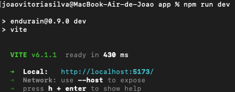

Developer guide
Setup a dev environment
Bellow are the steps to create a dev environment. Examples bellow will use Endurain repo, but you should adapt those for your scenario (forked repo, etc).
- Clone the repo to your dev machine:
$ cd <folder_to_store_code>
$ git clone https://github.com/joaovitoriasilva/endurain.git # this will clone the repo structure to the previous folder inside a folder called endurain
Docker image and backend logic
Make sure Docker is installed, more info here.
- On the project root folder, create a new Docker image, the example bellow uses
unified-imageas the image name:
$ docker build -f docker/Dockerfile -t unified-image .
- Go to the project root folder and create a file called
docker-compose.ymland adapt it to your needs. Example bellow:
services:
endurain:
container_name: endurain
image: unified-image # based on image that will be created above
environment:
- TZ=Europe/Lisbon # change if needed. Default is UTC
- DB_TYPE=postgres
- DB_HOST=postgres
- DB_PORT=5432
- DB_PASSWORD=changeme
- SECRET_KEY=changeme # openssl rand -hex 32
- FERNET_KEY=changeme # https://fernetkeygen.com or python -c "from cryptography.fernet import Fernet; print(Fernet.generate_key().decode())"
- GEOCODES_MAPS_API=changeme
- ENDURAIN_HOST=http://localhost:8080 # change if needed
- BEHIND_PROXY=false
- ENVIRONMENT=development
volumes:
- <path_to_project_root_folder>/backend/app:/app/backend # this will replace the backend code logic with yours. Any changes in the code need a container reboot for them to apply
ports:
- "8080:8080" # change if needed
depends_on:
postgres:
condition: service_healthy
restart: unless-stopped
postgres:
image: postgres:latest
container_name: postgres
environment:
- POSTGRES_PASSWORD=changeme
- POSTGRES_DB=endurain
- POSTGRES_USER=endurain
- PGDATA=/var/lib/postgresql/data/pgdata
ports:
- "5432:5432"
healthcheck:
test: ["CMD-SHELL", "pg_isready -U endurain"]
interval: 5s
timeout: 5s
retries: 5
volumes:
- <path_to_container_folders>/postgres:/var/lib/postgresql/data
restart: unless-stopped
adminer:
container_name: adminer
image: adminer
ports:
- 8081:8080
restart: unless-stopped
- Start your project based on the docker compose file created before:
$ docker compose up -d
- To stop the project:
$ docker compose down
- To remove the create
unified-imageDocker image:
$ docker image remove unified-image
- Backend uses Poetry for dependency management. You may need to install Python and Poetry if dependency management is necessary.
Frontend
Make sure you have an up-to-date version of Node.js installed.
- Go to the root of the project and move to frontend/app folder and install the dependencies:
$ cd frontend/app
$ npm install
- Create a file called
.env.localinside frontend/app and add the following to it:
VITE_ENDURAIN_HOST=http://localhost:8080 # Adapt this based on the docker compose of your dev environment
- After the dependencies are installed run the frontend:
$ npm run dev
- After the frontend starts running, it should be available in the port
5173. You should now be able to access the dev environment athttp://localhost:5173. Screenshot bellow shows the output from thenpm run dev. Adapt the port based on the command output.

- Some processes, like token refresh may redirect your dev env from port
5173to8080(or other, depending on your compose file). If this happens simply navigate again to5173.
API Integration (v0.3.0+)
Endurain supports integration with other apps:
API Requirements
- Add a header: Every request must include an
X-Client-Typeheader with eitherwebormobileas the value. Requests with other values will receive a403error. - Authorization: Every request must include an
Authorization Bearer: <access token>header with a valid (new or refreshed) access token.
Token Handling
- The backend will generate an
access_tokenvalid for 15 minutes and anrefresh_tokenvalid for 7 days. This follow the logic of short and longed lived tokens for auth session. - The
access_tokenis used for authorization; Therefresh_tokenis used to refresh theaccess_token. - For web apps, the backend sends access/refresh tokens as HTTP-only cookies.
- For mobile apps, tokens are included in the response body.
API Endpoints
The API is reachable under /api/v1. Below are some example endpoints. All endpoints information can be checked on the backend docs (http://localhost:98/docs or http://ip_address:98/docs or https://domain/docs):
| What | Url | Expected Information |
|---|---|---|
| Authorize | /token |
FORM with the fields username and password. This will be sent in clear text, use of HTTPS is highly recommended |
| Refresh Token | /refresh |
header Authorization Bearer: <Refresh Token> |
| Activity Upload | /activities/create/upload |
.gpx, .tcx, .gz or .fit file |
| Set Weight | /health/weight |
JSON {'weight': yyyy-MM-dd} |
MFA Authentication Flow
When Multi-Factor Authentication (MFA) is enabled for a user, the authentication process requires two steps:
Step 1: Initial Login Request
Make a standard login request to /token:
Request:
POST /api/v1/token
Content-Type: application/x-www-form-urlencoded
X-Client-Type: web|mobile
username=user@example.com&password=userpassword
Response (when MFA is enabled):
- Web clients: HTTP 202 Accepted
json
{
"mfa_required": true,
"username": "example",
"message": "MFA verification required"
}
- Mobile clients: HTTP 200 OK
json
{
"mfa_required": true,
"username": "example",
"message": "MFA verification required"
}
Step 2: MFA Verification
Complete the login by providing the MFA code to /mfa/verify:
Request:
POST /api/v1/mfa/verify
Content-Type: application/json
X-Client-Type: web|mobile
{
"username": "user@example.com",
"mfa_code": "123456"
}
Response (successful verification):
- Web clients: Tokens are set as HTTP-only cookies
json
{
"session_id": "unique_session_id"
}
- Mobile clients: Tokens are returned in response body
json
{
"access_token": "eyJ...",
"refresh_token": "eyJ...",
"session_id": "unique_session_id"
}
Error Handling
- No pending MFA login: HTTP 400 Bad Request
json { "detail": "No pending MFA login found for this username" } - Invalid MFA code: HTTP 401 Unauthorized
json { "detail": "Invalid MFA code" }
Important Notes
- The pending MFA login session is temporary and will expire if not completed within a reasonable time
- After successful MFA verification, the pending login is automatically cleaned up
- The user must still be active at the time of MFA verification
- If no MFA is enabled for the user, the standard single-step authentication flow applies
Supported activity types
The table bellow details the activity types supported by Endurain.
| Name | Value |
|---|---|
| Run | 1 |
| Trail run | 2 |
| Track run | 34 |
| Virtual run | 3 |
| Road cycling | 4 |
| Gravel cycling | 5 |
| MTB cycling | 6 |
| Commuting cycling | 27 |
| Mixed surface cycling | 29 |
| Virtual cycling | 7 |
| Indoor cycling | 28 |
| E-Bike cycling | 35 |
| E-Bike mountain cycling | 36 |
| Indoor swimming | 8 |
| Open water swimming | 9 |
| General workout | 10 |
| Walk | 11 |
| Indoor walk | 31 |
| Hike | 12 |
| Rowing | 13 |
| Yoga | 14 |
| Alpine ski | 15 |
| Nordic Ski | 16 |
| Snowboard | 17 |
| Ice Skate | 37 |
| Transition | 18 |
| Strength Training | 19 |
| Crossfit | 20 |
| Tennis | 21 |
| Table Tennis | 22 |
| Badminton | 23 |
| Squash | 24 |
| Racquetball | 25 |
| Pickleball | 26 |
| Padel | 39 |
| Windsurf | 30 |
| Stand up paddling | 32 |
| Surf | 33 |
| Soccer | 38 |
Supported gear types
The table bellow details the gear types supported by Endurain.
| Name | Value | Notes |
|---|---|---|
| bike | 1 | N/A |
| shoes | 2 | N/A |
| wetsuit | 3 | N/A |
| racquet | 4 | N/A |
| ski | 5 | N/A |
| snowboard | 6 | N/A |
| windsurf | 7 | N/A |
| water_sports_board | 8 | Example: stand up paddle and surf board |
Supported bike component gear types
The table bellow details the bike gear component types supported by Endurain:
| Value |
|---|
| back_break_oil |
| back_break_pads |
| back_break_rotor |
| back_tire |
| back_tube |
| back_tubeless_sealant |
| back_tubeless_rim_tape |
| back_wheel |
| back_wheel_valve |
| bottom_bracket |
| bottle_cage |
| cassette |
| chain |
| computer_mount |
| crank_left_power_meter |
| crank_right_power_meter |
| crankset |
| crankset_power_meter |
| fork |
| frame |
| front_break_oil |
| front_break_pads |
| front_break_rotor |
| front_derailleur |
| front_shifter |
| front_tire |
| front_tube |
| front_tubeless_sealant |
| front_tubeless_rim_tape |
| front_wheel |
| front_wheel_valve |
| grips |
| handlebar |
| handlebar_tape |
| headset |
| pedals |
| pedals_left_power_meter |
| pedals_power_meter |
| pedals_right_power_meter |
| rear_derailleur |
| rear_shifter |
| saddle |
| seatpost |
| stem |
Supported shoes component gear types
The table bellow details the shoes component gear types supported by Endurain:
| Value |
|---|
| cleats |
| insoles |
| laces |
Supported racquet component gear types
The table bellow details the racquet component gear types supported by Endurain:
| Value |
|---|
| basegrip |
| bumpers |
| grommets |
| overgrip |
| strings |
Supported windsurf component gear types
The table bellow details the windsurf component gear types supported by Endurain:
| Value |
|---|
| sail |
| board |
| mast |
| boom |
| mast_extension |
| mast_base |
| mast_universal_joint |
| fin |
| footstraps |
| harness_lines |
| rigging_lines |
| footpad |
| impact_vest |
| lifeguard_vest |
| helmet |
| wing |
| front_foil |
| stabilizer |
| fuselage |